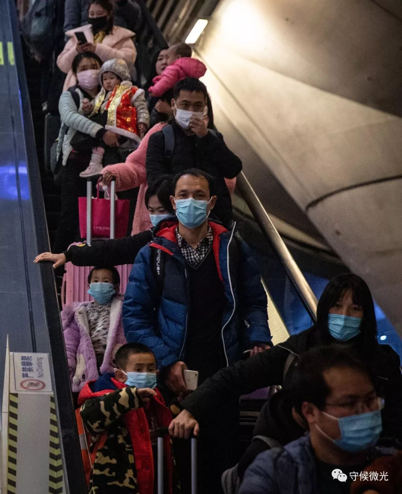
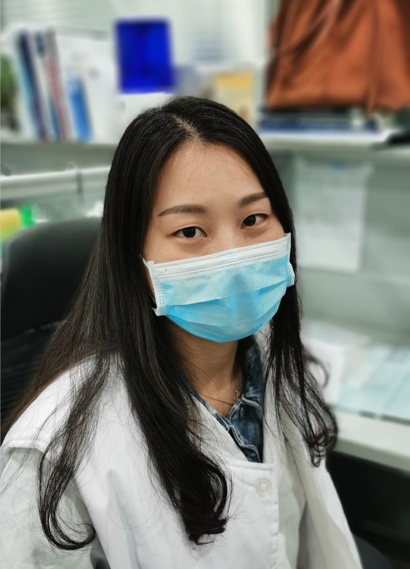
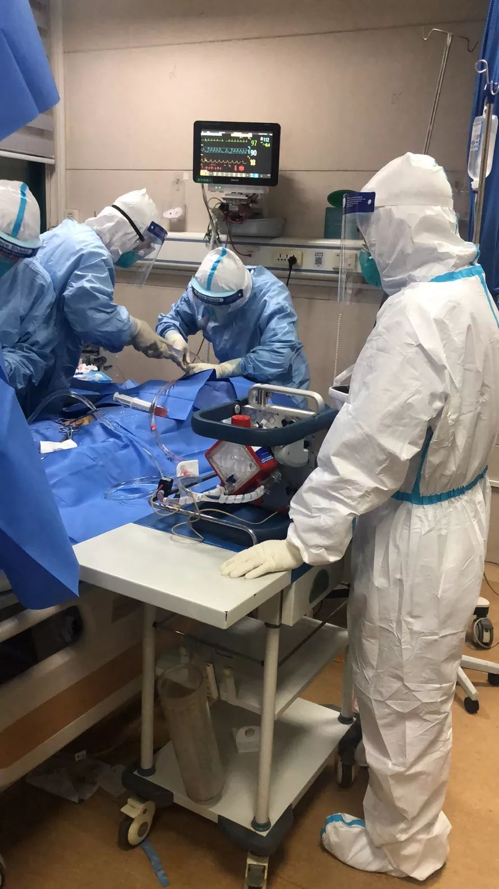
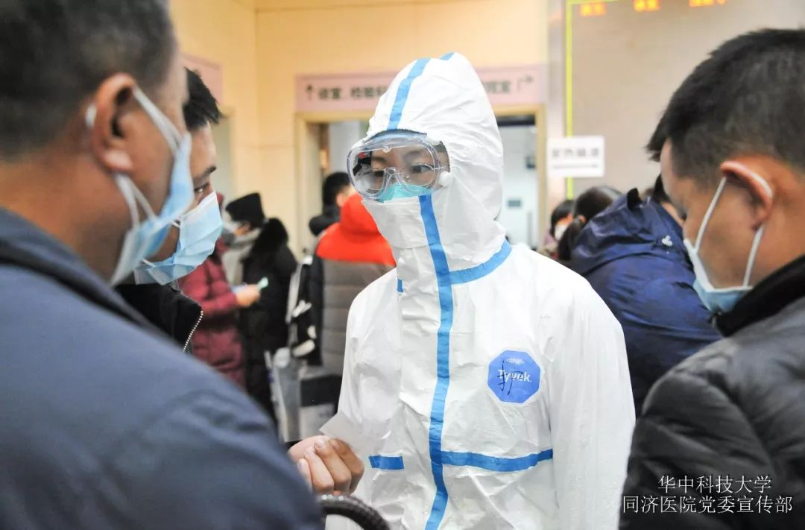
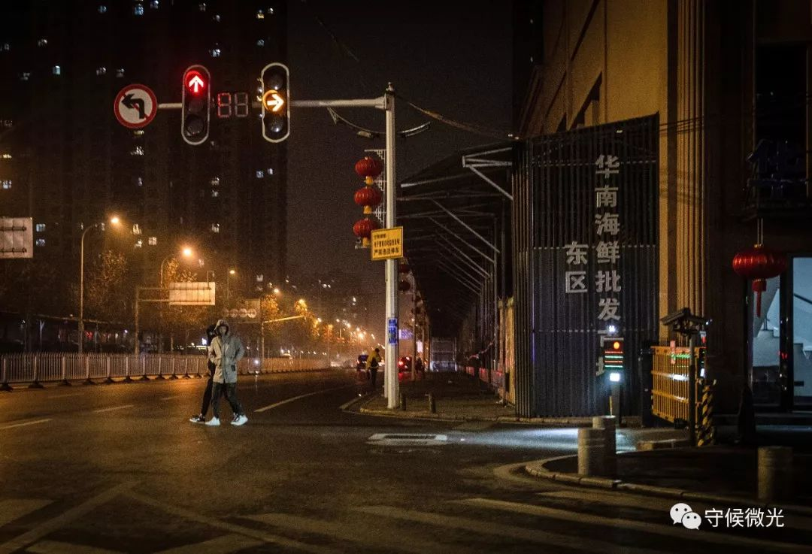
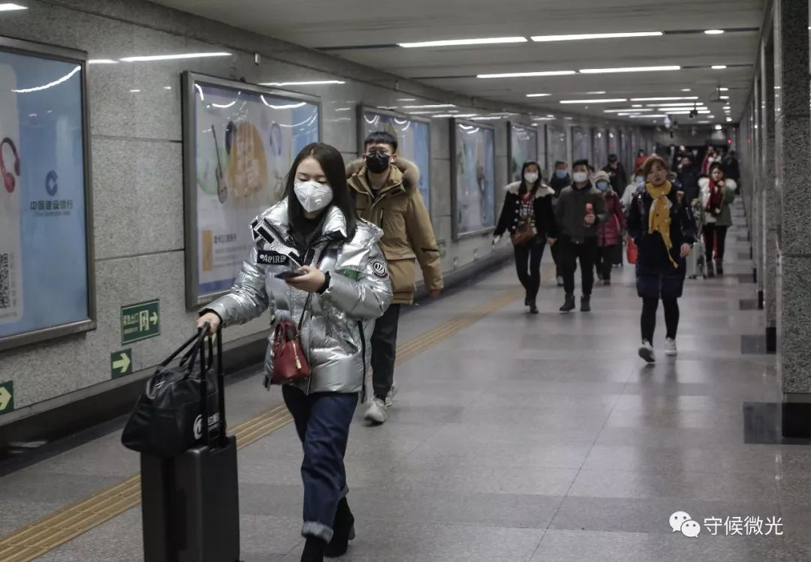
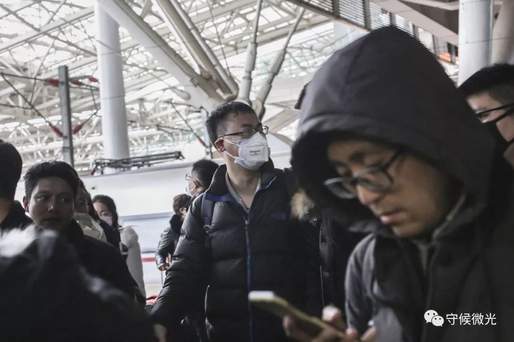
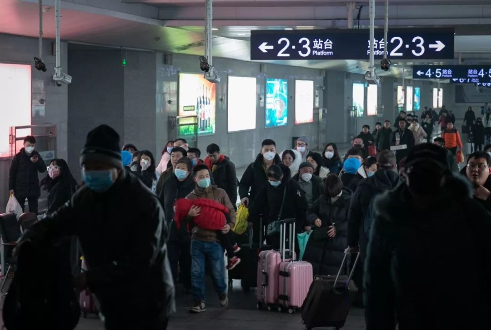

口罩告急！武汉医生每日发愁防护物资短缺
原文链接 备份链接 其他科室要尽量把医用口罩和防护服留给隔离病房的医护人员使用 2020年1月22日，在湖北省政府首场新型冠状病毒感染肺炎疫情防控工作新闻发布会上公布，新型冠状病毒感染的肺炎已致湖北17人死亡。图/新华 文 |《财经》 …

1月21日，湖北武汉站出站口，大部分乘客戴上了口罩。中青报·中青网记者 李峥苨/摄
据卫健委卫生应急办公室最新消息，截至1月22日24时，国内25个省（区、市）累计报告新型冠状病毒感染的肺炎确诊病例571例，13个省（区、市）累计报告疑似病例393例。境外通报确诊病例：中国香港1例，中国澳门1例，中国台湾1例；美国1例，日本1例，泰国3例，韩国1例。
1月23日，武汉市新型冠状病毒感染的肺炎疫情防控指挥部发布消息，自2020年1月23日10时起，全市城市公交、地铁、轮渡、长途客运暂停运营；无特殊原因，市民不要离开武汉，机场、火车站离汉通道暂时关闭。恢复时间另行通告。
疫情下，医护人员在一线奋战，各地民众也自觉戴起口罩自我防护。

1月21日，湖北武汉火车站，戴口罩的旅客准备检票进站。中青报·中青网记者 李峥苨/摄

1月22日，已经踏上返乡过年旅程的武汉大学人民医院病理科90后医生吴小艳，得知医院发布医疗支援的号召后，第一时间下车返汉，成为一名最美“逆行者”。杨岑/摄

1月15日，武汉大学中南医院，医务人员正在救治一名新型冠状病毒感染的肺炎重症患者。该患者男性，53岁，医护人员为其建立了体外膜肺氧合（ECMO）治疗，目前该患者是第一个成功脱离移动心肺仪救治的新型冠状病毒感染肺炎重症患者。 武汉大学中南医院急救中心副主任 夏剑/摄
 湖北省人民医院，一名医生的眼镜被水汽覆盖。湖北省人民医院 供图
湖北省人民医院，一名医生的眼镜被水汽覆盖。湖北省人民医院 供图

武汉市华中科技大学同济医学院附属同济医院的医务人员在工作中。同济医院宣传部供图

1月22日，武汉市江汉区一家药店，堆放着补货的抗病毒口服液、雾化器等医药产品，大多用于治疗呼吸道疾病，口罩仍处于缺货状态。目前，湖北省拟向国家请求紧急支援，调拨医用口罩、防护服、红外测温仪等防护物资。中青报·中青网记者 李峥苨/摄

1月21日，湖北武汉，自1月1日起休市的华南海鲜批发市场店铺大门紧闭。2019年12月底，这里最早发现并集中出现多例新型冠状病毒肺炎患者。中青报·中青网记者 李峥苨/摄

1月22日，北京地铁中，戴着口罩的行人推着行李箱走过。中青报·中青网见习记者 孔斯琪/摄

1月21日凌晨，北京西站，从北京西通往武汉的列车，乘客们已经提前戴好了口罩。中青报·中青网见习记者 鲁冲/摄

1月22日，北京南站，一位戴着口罩的乘客拿着车票准备进站。中青报·中青网见习记者 孔斯琪/摄

1月22日，青岛北站，乘客陆续出站，不少人戴上了口罩。中青报·中青网见习记者 孔斯琪/摄

1月22日，青岛北站，出站的乘客。中青报·中青网见习记者 孔斯琪/摄
1月22日，青岛北站，一位铁路工作人员正在戴着口罩值班。中青报·中青网见习记者 孔斯琪/摄

1月22日，北京站，候车室内戴口罩的乘客们。中青报·中青网见习记者 张玉佳/摄

1月22日，河北秦皇岛站，带口罩的乘客们走出站口。中青报·中青网见习记者 张玉佳/摄
编辑 | 曲俊燕
中国青年报·中青在线出品
微信编辑 | 陈轶男

觉得好看请点这里
原文链接 备份链接 其他科室要尽量把医用口罩和防护服留给隔离病房的医护人员使用 2020年1月22日，在湖北省政府首场新型冠状病毒感染肺炎疫情防控工作新闻发布会上公布，新型冠状病毒感染的肺炎已致湖北17人死亡。图/新华 文 |《财经》 …
原文链接 备份链接 1月22日，湖北武汉，菱角湖万达广场开门营业前，商场对工作人员逐一进行体温检测。中青报·中青网记者 李峥苨/摄 1月22日，湖北武汉，菱角湖万达广场开门营业前，商场对工作人员逐一进行体温检测。中青报·中青网记者 李峥 …
原文链接 备份链接 23.01.2020本文字数：1298，阅读时长大约2分钟 导读：比春运期间高铁票更难买的东西，是新型冠状病毒蔓延时期的口罩。 作者 | 第一财经 段倩倩 比春运期间高铁票更难买的东西，是新型冠状病毒蔓延时期的口罩。 …
原文链接 备份链接 作者 | 第一财经 吴绵强 周芳 陈益刊 编辑 | 张富贵 为了遏制新型冠状病毒感染的肺炎扩散，按照武汉市新型冠状病毒感染的肺炎疫情防控指挥部通告，自1月23日10时起，武汉全市城市公交、地铁、轮渡、长途客运暂停运营； …
原文链接 备份链接 1月4日，在尚无确诊病例的情况下，香港卫生署启动应变计划，将应变等级从“戒备”升为“严重”。几天后，香港修例以完善新型肺炎的呈报。香港政府发言人表示，将“严重新型传染性病原体呼吸系统病”纳入法定须呈报的传染病，提高监测 …